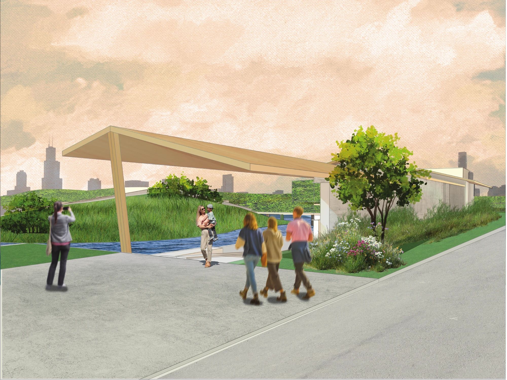
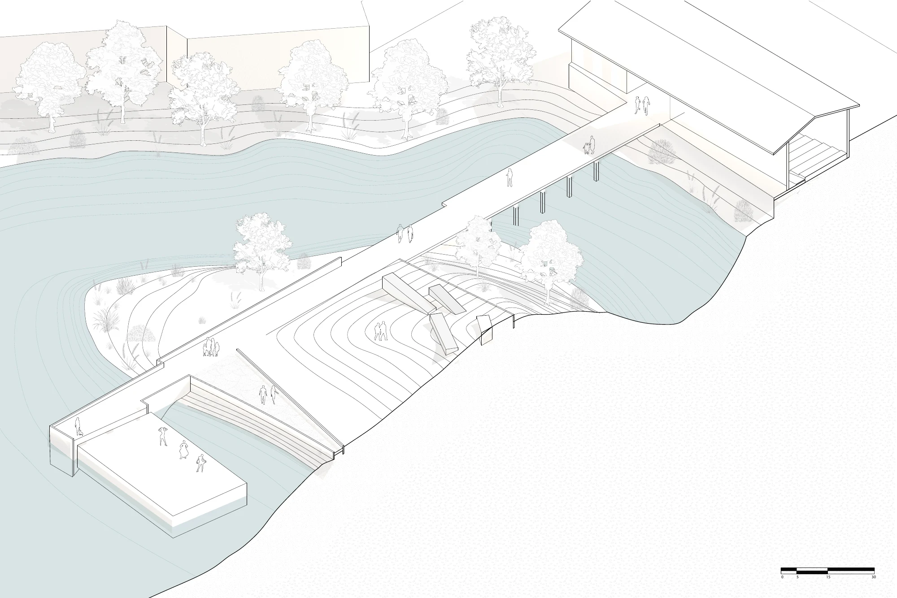
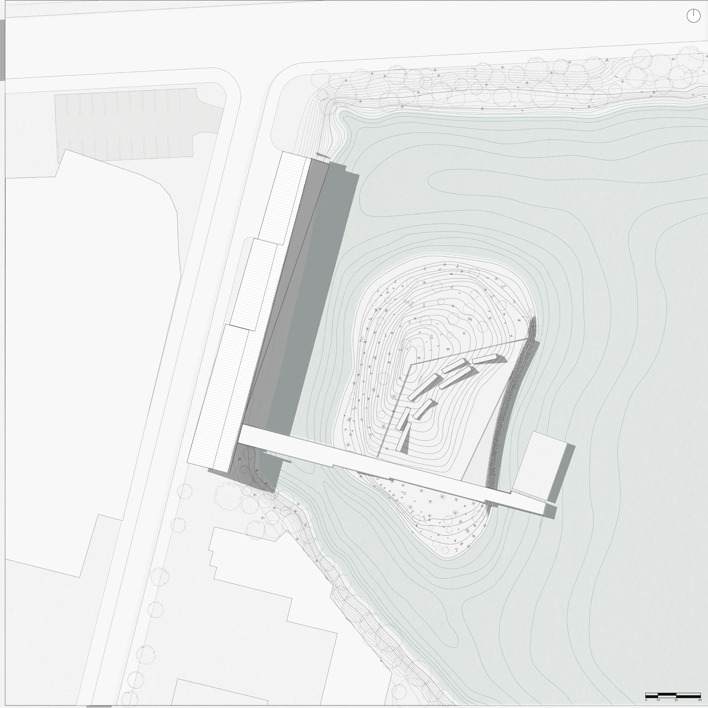
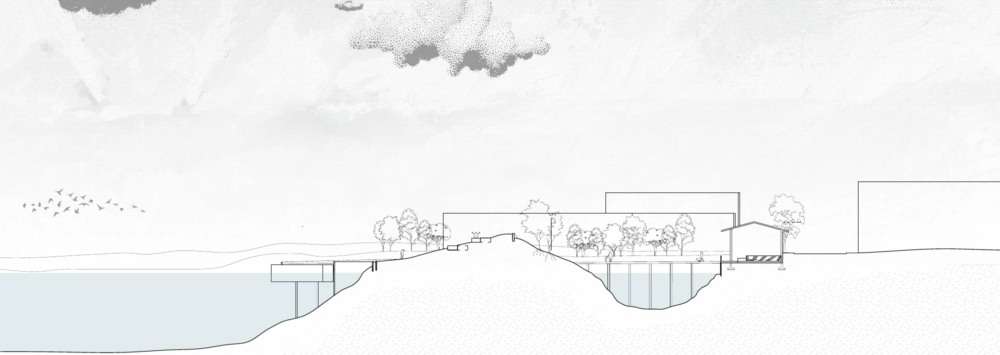
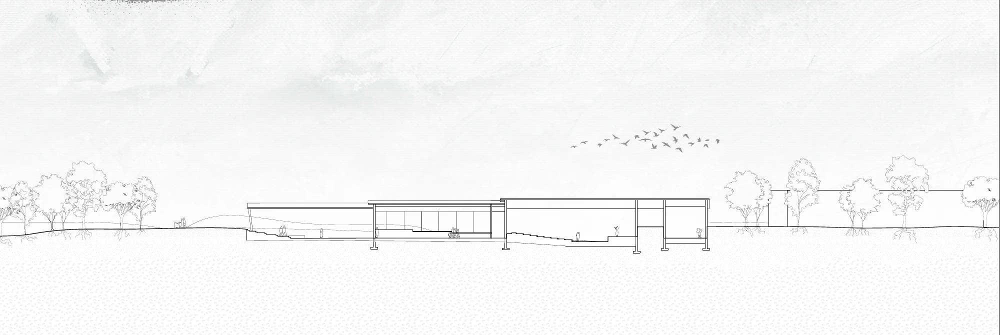
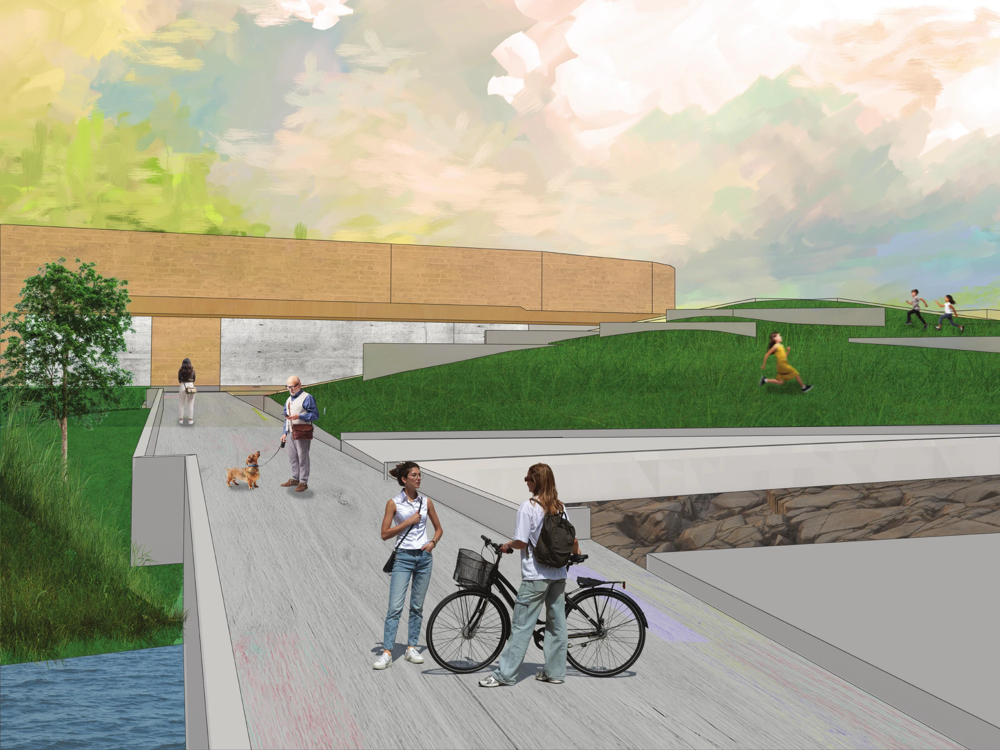
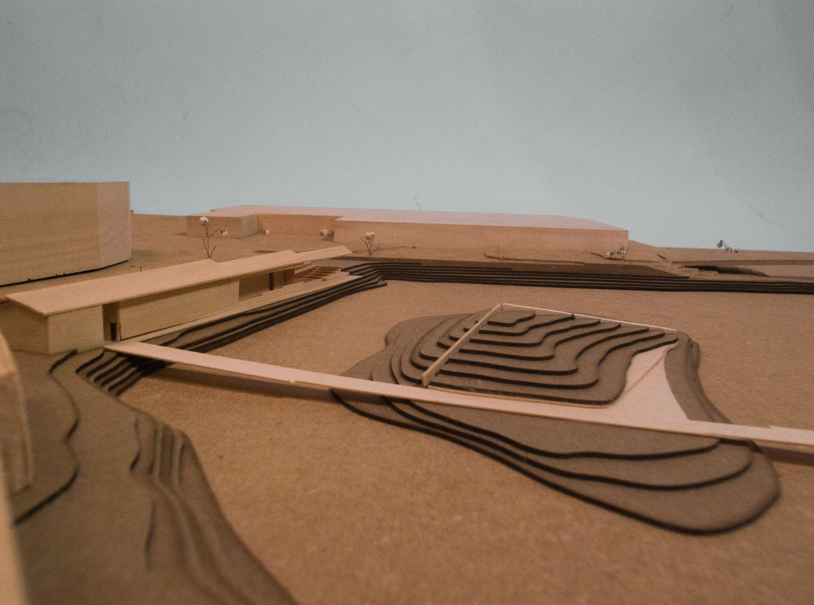
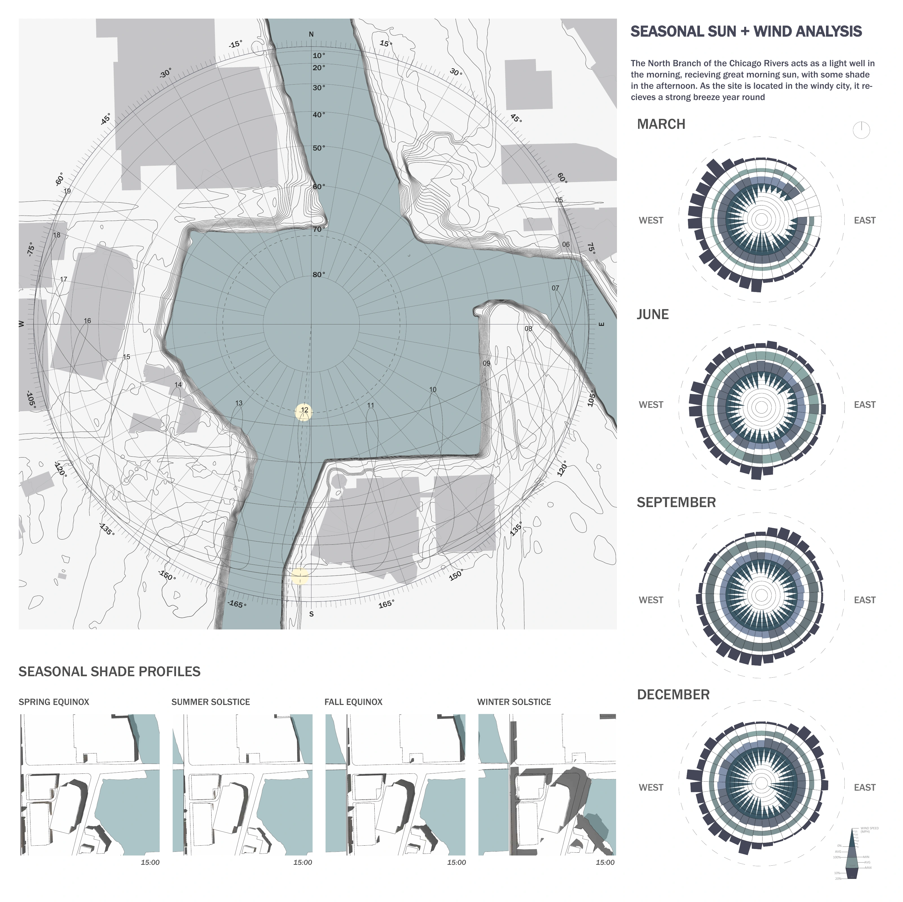

01 / Performance / Ecology
The Pier
Chicago, Illinois — Core 3

Theater and riverfront landscape
An island in the North Branch turning basin pairs an outdoor amphitheater with protected wetland habitat. A bridge links the island to a linear theater building along the existing shore. Public gathering and ecological restoration occupy the same site, while much of the new landscape remains reserved for wildlife.
Academic collaboration with Lucas Gomez. Drawings and the renderings shown here: Dawson Duffley. Physical model: Lucas Gomez.






